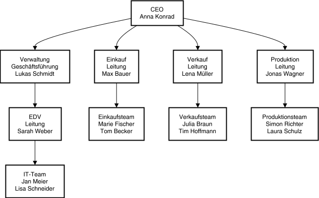

Organigramm erstellen
Um ein Modellorganigramm zu erstellen, können wir draw.io verwenden. Draw.io ist ein kostenloses Diagramm- und Zeichenprogramm, das sowohl lokal installiert als auch als Online-Dienst im Browser laufen kann.
- Schritt: Prompt eingeben und per KI erstellen lassen. Dazu verwenden wir entweder direkt draw.io und "Smarte Vorlage" oder zunächst eine textbasierte KI, zum Beispiel:
Erstelle ein fiktives Organigramm mit 4 Ebenen (vertikal von oben nach unten) der Firma Anna-Konrad-Bikes E. Kfr. Formatiere als mermaid. Verwende deutsche Begriffe, konkrete Personennamen und die Standardbereiche: Einkauf, Verkauf, Produktion, Verwaltung. Jeder Bereich soll einen eigenen Leiter mit Namen und mehrere Teammitglieder haben. Füge an Verwaltung den Stab EDV mit einer eigenen Leitung und Team an. Die Felder sollen nicht zu breit werden, füge Zeilenumbrüche ein und trenne Personen und Bereiche.
Beispielergebnis:
- Schritt: draw.io öffnen und ein neues Diagramm erstellen. Das Beispielergebnis kopieren und unter "Anordnen --> Einfügen --> Erweitert --> Mermaid" einfügen.
- Schritt (optional): Diagramm bearbeiten und nach Wunsch anpassen.
- Schritt: Diagramm markieren und exportieren unter "Datei --> Exportieren als --> SVG (nur Markierung, transparenter Hintergrund)"
